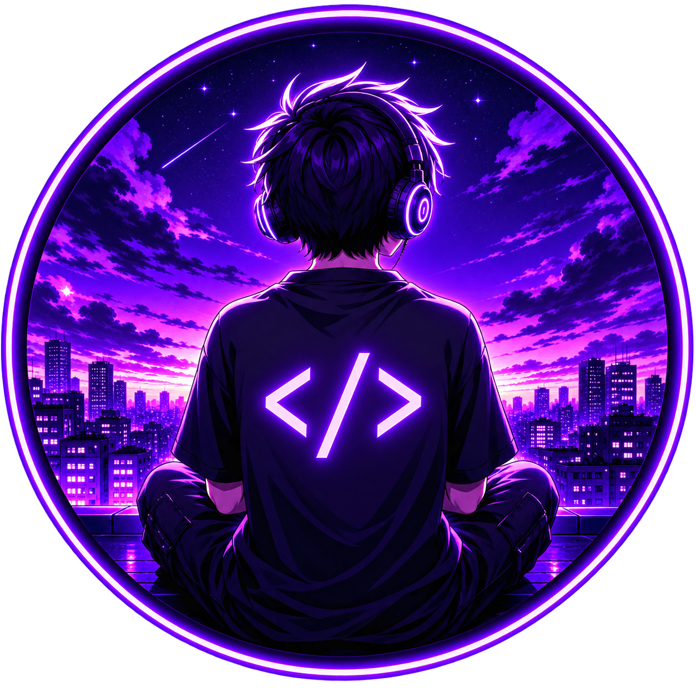

WEB DEVELOPMENT · UI · MOTION
Websites that
feel alive.
I build premium, responsive websites and interactive experiences using HTML, CSS, JavaScript, React and Next.js.
01 / THE APPROACH
Design.
Develop.
Deliver.
From clean business websites to highly animated landing pages, I create experiences that look modern and work smoothly across devices.
View skills ↗SERVICES
Small team energy, singular focus01Business WebsitesCustom development ↗
02Landing PagesCustom development ↗
03Animated UICustom development ↗
04React WebsitesCustom development ↗
05Next.js WebsitesCustom development ↗
06Website RedesignCustom development ↗
02 / WHY IT WORKS
Less noise.
More signal.
Every interaction earns its place. I pair crisp visual systems with the tiny moments that make a site memorable: a good hover, a useful transition, a page that knows when to breathe.
Talk about your project ↗THE BUILD
From first thought to live URL⌘Shape the ideaDirection, structure and a clear point of view before a pixel is polished.
▱Build the systemResponsive components and a frontend that stays quick as it grows.
⌁Make it moveInteraction, motion and details that reward a second look.